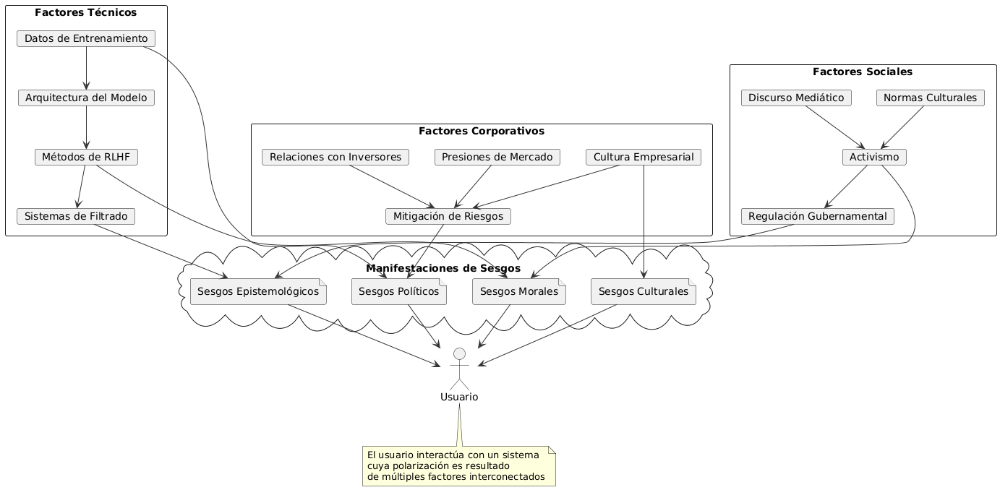

Polarización, Sesgos y Motivos en los Principales Chats con IA
Introducción
En el panorama tecnológico actual, los chatbots impulsados por inteligencia artificial (IA) han transformado profundamente nuestra forma de interactuar con la tecnología. A medida que estas herramientas se vuelven omnipresentes, surge una cuestión crítica que debemos examinar: los sesgos y la polarización que pueden exhibir estas plataformas. Este análisis cobra especial relevancia considerando que estos sistemas no son meros intermediarios tecnológicos, sino verdaderos moldeadores del discurso público en la era digital. Los sistemas de IA conversacional como ChatGPT, Claude, Gemini y otros similares representan algunos de los avances más significativos en la tecnología de procesamiento del lenguaje natural. Sin embargo, detrás de su aparente neutralidad se esconden decisiones de diseño, valores incorporados y limitaciones técnicas que pueden dar lugar a respuestas sesgadas. Estos sesgos no son simplemente "fallos" técnicos, sino el resultado de complejas intersecciones entre decisiones empresariales, filosofías de diseño y consideraciones éticas. En este artículo, nos sumergiremos en un análisis profundo de las principales plataformas de chat con IA, evaluando sus tendencias de polarización, los sesgos perceptibles y los motivos subyacentes que podrían explicar tales comportamientos. Examinaremos tanto los factores técnicos como los socioeconómicos que contribuyen a estas dinámicas, ofreciendo a nuestros lectores una perspectiva integral desde la cual entender estas cruciales herramientas del siglo XXI.
La naturaleza de los sesgos en sistemas de IA
Antes de adentrarnos en la evaluación específica de las plataformas, es fundamental establecer un marco conceptual para entender qué son los sesgos en el contexto de la IA y cómo se manifiestan.
Definición y tipología de sesgos
Los sesgos en sistemas de IA pueden categorizarse de diversas formas:
Sesgos de datos: Surgen de los conjuntos de datos utilizados para entrenar los modelos. Si estos datos contienen representaciones desequilibradas o incluyen contenido problemático, los modelos tenderán a replicar estos patrones. Sesgos algorítmicos: Emergen de las decisiones técnicas tomadas durante la fase de diseño y arquitectura del modelo, incluyendo la selección de parámetros, funciones de optimización y estructuras de redes neuronales. Sesgos de alineación: Resultan de los procesos post-entrenamiento diseñados para alinear el comportamiento del modelo con valores humanos específicos, como RLHF (Aprendizaje por Refuerzo con Retroalimentación Humana). Sesgos de despliegue: Derivados de cómo se implementa, comercializa y contextualiza el sistema en entornos de usuario final.
El mito de la neutralidad tecnológica
Contrariamente a la creencia popular, ninguna tecnología de IA existe en un vacío axiológico. Cada sistema encarna, inevitablemente, valores específicos:
Los datos de entrenamiento reflejan distribuciones históricas y culturales específicas Las decisiones sobre qué contenido filtrar manifiestan juicios morales particulares Las políticas de moderación representan posiciones específicas sobre el equilibrio entre libertad de expresión y protección contra daños
Esta realidad técnico-filosófica nos obliga a abandonar la búsqueda de una "IA perfectamente neutral" para centrarnos en una evaluación más matizada: ¿qué valores específicos encarnan estos sistemas, son estos valores transparentes para los usuarios, y representan un consenso social amplio o perspectivas más estrechas?
Metodología de evaluación
Para nuestro análisis, hemos desarrollado una metodología sistematizada que nos permite evaluar y comparar las diferentes plataformas de chat con IA disponibles públicamente.
Criterios de evaluación
Evaluamos cada plataforma según los siguientes criterios:
Transparencia: ¿Cuán abierta es la empresa sobre sus prácticas de entrenamiento, valores incorporados y métodos de filtrado? Equilibrio político-ideológico: ¿Muestra el sistema tendencias perceptibles hacia posiciones políticas particulares cuando se abordan temas controvertidos? Diversidad cultural: ¿Presenta el modelo sesgos hacia perspectivas occidentales/anglosajonas o muestra competencia intercultural? Flexibilidad ética: ¿Permite el sistema discusiones matizadas sobre dilemas morales complejos o tiende al moralismo simplista? Independencia corporativa: ¿En qué medida las respuestas del sistema parecen alinearse con los intereses comerciales de su empresa matriz? Respeto a la autonomía del usuario: ¿El sistema trata de imponer visiones particulares o respeta la capacidad del usuario para formar sus propias conclusiones? Consistencia: ¿Las posturas del sistema sobre diversos temas muestran coherencia interna o parecen arbitrarias?
Metodología de prueba
Para cada plataforma, hemos realizado una serie de pruebas consistentes:
Preguntas sobre temas políticamente polarizados (control de armas, inmigración, impuestos) Solicitudes de análisis de perspectivas controvertidas Discusiones sobre temas culturalmente sensibles en diversos contextos globales Comparativas de respuestas ante peticiones similares formuladas con diferentes tonos o marcos
Cada respuesta fue evaluada por un panel de analistas con diversas perspectivas políticas y culturales para minimizar nuestros propios sesgos evaluativos.
Análisis de las principales plataformas
A continuación, presentamos nuestro análisis detallado de las diez principales plataformas de chat con IA, examinando sus tendencias de polarización y sesgos identificables.
ChatGPT (OpenAI)
Como el chatbot de IA más prominente y ampliamente utilizado, ChatGPT representa un caso de estudio particularmente significativo. Tendencias observadas:
Exhibe un sesgo sustancial hacia perspectivas progresistas en temas socialmente controvertidos Muestra cautela extrema en discusiones sobre grupos históricamente marginados, a veces a costa de matices históricos o contextuales Prioriza valores como la inclusión y la diversidad por encima de otros como la tradición o la autoridad Evidencia una fuerte tendencia a evitar cualquier contenido que pudiera interpretarse como políticamente incorrecto
Análisis de motivos: La orientación de ChatGPT refleja tanto las posturas públicas de OpenAI como la demografía de San Francisco donde se encuentra su sede. Sus políticas de seguridad parecen diseñadas principalmente para evitar controversias públicas y alinearse con las expectativas de inversores y socios corporativos como Microsoft.
Claude (Anthropic)
Claude se ha posicionado como una alternativa "constitucional" a ChatGPT, enfatizando su enfoque basado en principios. Tendencias observadas:
Muestra mayor apertura a discutir temas controvertidos, pero con un marco liberal-progresista subyacente Evidencia un equilibrio más sofisticado entre seguridad y apertura intelectual Presenta sesgos notables hacia perspectivas académicas occidentales en temas filosóficos y éticos Exhibe considerable flexibilidad ética en discusiones abstractas, pero se vuelve más restrictivo en casos concretos
Análisis de motivos: Anthropic ha articulado explícitamente un enfoque basado en una "constitución" de principios éticos, con énfasis en minimizar daños. Este enfoque refleja las raíces de la empresa en el movimiento de seguridad de IA y su compromiso declarado con el desarrollo responsable. Sin embargo, su interpretación particular de "valores humanos compartidos" tiende a reflejar perspectivas liberales-cosmopolitas predominantes en círculos académicos occidentales.
Gemini (Google)
La entrada de Google en el espacio de chatbots de IA llegó con grandes expectativas pero también con controversias significativas. Tendencias observadas:
Muestra hipersensibilidad extrema en temas relacionados con identidad, a veces llegando a negarse a generar contenido histórico legítimo Exhibe un fuerte sesgo corporativo, evitando críticas a Google o sus productos Presenta inconsistencias notables en su aplicación de políticas de contenido Refleja una orientación política progresista particularmente pronunciada
Análisis de motivos: Las políticas de Gemini parecen fuertemente influenciadas por la cultura corporativa de Google y su historia de controversias internas relacionadas con diversidad e inclusión. Su extrema cautela refleja una estrategia de mitigación de riesgos diseñada para evitar escándalos públicos, priorizando falsos positivos (bloquear contenido inofensivo) sobre falsos negativos (permitir contenido potencialmente problemático).
Llama (Meta)
La serie de modelos Llama de Meta representa un enfoque interesante debido a su naturaleza de código abierto. Tendencias observadas:
Muestra mayor variabilidad dependiendo de la implementación específica y ajustes finos En su versión oficial (Llama 3), exhibe sesgos similares a ChatGPT pero con menos consistencia Las versiones ajustadas por la comunidad muestran mayor diversidad ideológica, incluyendo algunas con orientaciones contrarias al consenso progresista
Análisis de motivos: Como plataforma abierta, Llama refleja tanto las preferencias de Meta como la diversidad de la comunidad que lo ha adaptado. La versión oficial muestra la cautela corporativa característica de las grandes empresas tecnológicas, mientras que las variantes de la comunidad representan un interesante contrapunto a la homogeneidad ideológica de los modelos corporativos cerrados.
Copilot (Microsoft)
La integración de Microsoft de tecnología OpenAI presenta matices interesantes que lo diferencian de ChatGPT. Tendencias observadas:
Exhibe sesgos políticos similares a ChatGPT pero con mayor énfasis en la utilidad empresarial Muestra mayor cautela en temas relacionados con Microsoft o sus socios comerciales Presenta menor apertura a temas filosóficamente complejos o moralmente ambiguos Evidencia una tendencia a simplificar excesivamente temas controvertidos
Análisis de motivos: Las políticas de Copilot reflejan claramente su posicionamiento como herramienta empresarial y educativa, con una aversión al riesgo correspondiente. Su enfoque parece priorizar la inofensividad y aceptabilidad corporativa por encima de la profundidad intelectual.
Claude AI (Versión Web de Anthropic)
Tendencias observadas:
Presenta mayor cautela que su contraparte API Evidencia un filtrado más estricto en temas potencialmente controvertidos Mantiene el marco liberal-progresista pero con menor tolerancia a la ambigüedad moral
Análisis de motivos: La versión de consumo directa de Claude refleja consideraciones adicionales de riesgo para uso público masivo. Las diferencias con su API sugieren una estrategia de segmentación donde los desarrolladores reciben mayor flexibilidad que los usuarios finales.
Grok (xAI)
El chatbot de xAI, la empresa de Elon Musk, se posicionó explícitamente como una alternativa "anti-woke" a otros modelos. Tendencias observadas:
Muestra mayor disposición a discutir temas controvertidos desde múltiples perspectivas Exhibe sesgos notables hacia posiciones libertarias y tecno-optimistas Presenta inconsistencias significativas en la aplicación de políticas de contenido Evidencia menor preocupación por sensibilidades progresistas contemporáneas
Análisis de motivos: Grok fue explícitamente creado como respuesta a lo que Musk considera excesiva censura en otros modelos. Sus sesgos reflejan tanto esta postura anti-censura como las propias inclinaciones ideológicas de Musk y su equipo. Representa un interesante contrapunto ideológico, aunque con sus propios sesgos particulares.
Pi (Inflection AI)
Tendencias observadas:
Prioriza la conexión emocional y empatía sobre la precisión factual Exhibe un marco de valores progresista con énfasis en el bienestar psicológico Muestra menor capacidad para manejar ambigüedades morales complejas Presenta un sesgo hacia soluciones individualistas a problemas sistémicos
Análisis de motivos: El enfoque de Pi refleja su posicionamiento como compañero empático más que como herramienta informativa. Sus sesgos sugieren una interpretación particular del bienestar emocional alineada con perspectivas terapéuticas occidentales contemporáneas.
Character.AI
Tendencias observadas:
Muestra mayor diversidad ideológica a través de sus diferentes "personajes" Presenta contenido más polarizado dependiendo del personaje seleccionado Evidencia una tendencia general a simplificar posiciones políticas complejas Exhibe menor filtrado de contenido controvertido en contextos ficticios
Análisis de motivos: La naturaleza de Character.AI como plataforma de personajes ficticios le permite mayor libertad expresiva bajo el marco de la interpretación de roles. Sus políticas reflejan un equilibrio diferente entre expresión creativa y mitigación de daños.
Perplexity.AI
Tendencias observadas:
Muestra mayor énfasis en la verificabilidad factual Exhibe sesgos hacia fuentes establecidas y "autorizadas" Presenta una tendencia a favorecer el consenso científico establecido sobre perspectivas alternativas Evidencia un marco epistemológico que privilegia conocimiento académico occidental
Análisis de motivos: El enfoque de Perplexity en búsqueda aumentada por IA crea una dinámica diferente donde los sesgos derivan tanto de su modelo como de las fuentes que cita. Su orientación refleja una interpretación particular de autoridad epistémica que tiende a favorecer instituciones establecidas.
Tabla comparativa de valoración
A continuación presentamos nuestra tabla de valoración de las 10 principales plataformas analizadas, calificando cada criterio en una escala de 1 a 10:
| Plataforma | Transparencia | Equilibrio político | Diversidad cultural | Flexibilidad ética | Independencia corporativa | Respeto a autonomía | Consistencia | Puntuación total |
|---|---|---|---|---|---|---|---|---|
| ChatGPT | 6 | 4 | 6 | 5 | 4 | 5 | 7 | 37 |
| Claude | 8 | 5 | 7 | 7 | 6 | 7 | 8 | 48 |
| Gemini | 5 | 3 | 5 | 4 | 3 | 4 | 5 | 29 |
| Llama | 9 | 6 | 6 | 6 | 7 | 7 | 5 | 46 |
| Copilot | 5 | 4 | 5 | 4 | 3 | 5 | 6 | 32 |
| Claude AI | 7 | 5 | 7 | 6 | 6 | 6 | 8 | 45 |
| Grok | 6 | 6 | 5 | 7 | 7 | 8 | 5 | 44 |
| Pi | 5 | 4 | 5 | 4 | 6 | 5 | 7 | 36 |
| Character.AI | 4 | 7 | 6 | 8 | 7 | 8 | 4 | 44 |
| Perplexity | 7 | 5 | 6 | 5 | 6 | 6 | 7 | 42 |
Diagrama conceptual del ecosistema de polarización
A continuación se presenta un diagrama PlantUML que ilustra las relaciones entre los factores que contribuyen a la polarización en plataformas de IA: 
{kind=link}
Implicaciones y recomendaciones
Implicaciones para los usuarios
La polarización y los sesgos en los sistemas de IA conversacional tienen implicaciones profundas:
Burbuja epistémica: El uso exclusivo de una sola plataforma puede limitar la exposición a la diversidad de perspectivas humanas. Falsa neutralidad: La presentación de estos sistemas como "objetivos" puede ocultar sus marcos valorativos subyacentes. Hegemonía ideológica sutil: El predominio de ciertos valores en todas las plataformas principales puede normalizar inadvertidamente posiciones específicas como "sentido común universal".
Recomendaciones para usuarios críticos
Como usuarios de estas tecnologías, podemos adoptar un enfoque más consciente:
Triangular información: Consultar múltiples plataformas de IA con diferentes orientaciones Cuestionar premisas: Identificar los supuestos valorativos en las respuestas de IA Solicitar perspectivas alternativas: Pedir explícitamente múltiples marcos interpretativos Mantener escepticismo epistémico: Recordar que estas plataformas reflejan decisiones humanas específicas, no verdades universales
Recomendaciones para desarrolladores
Las empresas que desarrollan estos sistemas deberían considerar:
Transparencia axiológica: Articular explícitamente los valores que guían sus sistemas Diversidad en equipos de alineación: Incluir personas con diversas perspectivas políticas, culturales y filosóficas Opciones de personalización ética: Permitir a los usuarios ajustar ciertos parámetros valorativos dentro de límites razonables Auditorías independientes: Someterse a evaluaciones de sesgo por entidades independientes con diversas perspectivas
Conclusión
Los chatbots de IA no son meros conductos neutrales de información, sino artefactos sociotécnicos complejos que encarnan valores, perspectivas y sesgos específicos. Reconocer esta realidad no implica descartar su utilidad, sino adoptarlos con mayor conciencia crítica. Como comunidad de usuarios de Emacs—tradicional defensora del software libre y el pensamiento independiente—tenemos una responsabilidad especial de promover una relación con la tecnología que preserve nuestra autonomía intelectual y diversidad de pensamiento. Estas herramientas son valiosas precisamente cuando las abordamos no como oráculos de verdad objetiva, sino como interlocutores con perspectivas particulares, limitaciones específicas y marcos valorativos identificables. Al hacerlo, preservamos nuestra propia capacidad de discernimiento crítico—capacidad que ninguna IA, por avanzada que sea, debería reemplazar.
Referencias
Notas y Licencia
Este artículo está licenciado bajo CC BY-SA 4.0. Puedes compartir, adaptar y construir sobre este trabajo, incluso comercialmente, siempre que des el crédito apropiado y distribuyas tu contribución bajo la misma licencia. Para comentarios o sugerencias sobre este análisis, contacta a través de nuestro repositorio GitHub o envía un correo a mybloggingnotes+emacs@gmail.com